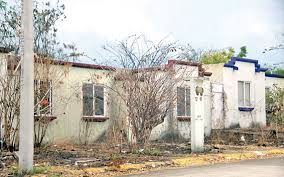
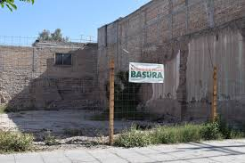
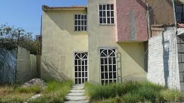
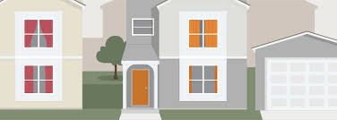
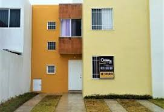

Casas
Casas Abandonadas
En una calle céntrica, poblada en general por edificios modernos, se ve una vieja casa abandonada. Al frente hay un jardín, separado de la vereda por una verja; actualmente muy sucio y pasto seco, Esta casa interesa solamente a algunas personas que caen bajo su influjo.
Edificios

Edificios Abandonadas Desastres naturales, grandes migraciones, fracasos económicos o simplemente el paso del tiempo pueden generar que importantes obras de arquitectura -e incluso pueblos- enteros queden abandonados a la merced del deterioro, perdiendo parcial o completamente sus condiciones de habitabilidad. Comprendiendo que estos edificios forman parte de nuestra historia reciente, cada vez son más los fotógrafos, historiadores y exploradores urbanos que se aventuran en la búsqueda de estas ruinas modernas.
Terrenos
Terrenos Abandonadas Sea cual fuere la versión verdadera, la realidad indica que en el medio de la ciudad hay un inmueble que acumula todo tipo de desperdicios, afecta al entorno, encarece la provisión de servicios y por el que además nadie paga las tasas e impuestos, por lo que su incumplimiento debe distribuirse a prorrata entre el resto de los vecinos.
Actual
Casa Actual
Proyecto
Proyecto Remodelado
Entrega
Entrega de vivienda